Many of my electronics projects are related to portablizing, which is a hobby of turning video game consoles into battery-powered handhelds.
UltraWii
UltraWii is a portable Nintendo Wii I spent a few years iterating on throughout college. It uses a real Wii motherboard that has been trimmed down with a Dremel, and various ICs relocated to maintain functionality. Copious documentation by members of the BitBuilt.net community has enabled these sorts of hardmods. I designed numerous PCBs that perform a variety of functions in the unit, including a main four-layer board that incorporates USB C PD negotiation, 5A battery charging, voltage regulation for the Wii’s various voltage lines, an I2S audio amp, and thermal protection for the Wii.
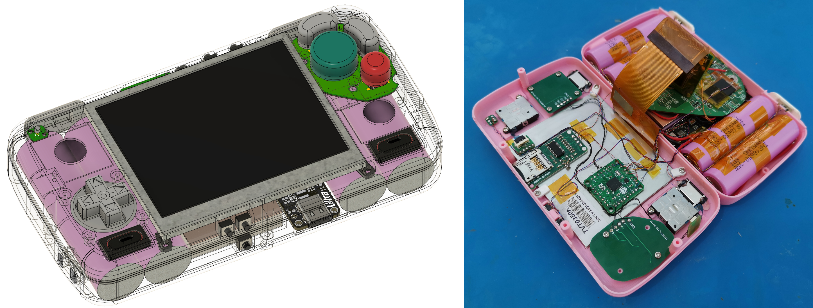
I designed the first iteration of this board in early 2018, and continually update it to use newer and more interesting ICs. For me, PCB design is as much an art as it is engineering, so I enjoy iterating on the design for the sake of getting better. The current board is the sixth or seventh version.
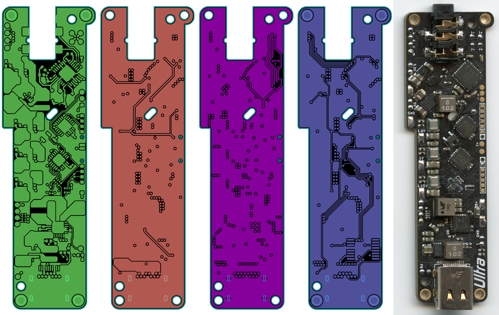Game Console Reimplementation
These projects are all WIP attempts to reverse-engineer and reimplement video game console hardware into smaller and more efficient form factors. This usually involves capturing a schematic of the console, which requires stripping the motherboards and sanding the soldermask off, revealing the bare copper and internal layers. I scan these layers and use the images to RE the boards, cross-referencing existing partial schematics when they’re available. The original ICs must be removed and transplanted onto the new PCBs for these projects. Unfortunately a general lack of funds for these projects and the ongoing silicon shortage has hindered my efforts to bring these boards to fruition.
αSNES (Super Nintendo)

αSNES is a complete Super Nintendo on a 77x68mm four-layer PCB, including a BQ25792 for battery charging, a TPS61235 5V boost converter, and an LM49450 I2S audio amp. The battery charging and audio amp are controlled by an onboard ATtiny84A. This design has been complete since 2020, but I can’t obtain some of the ICs due to the silicon shortage. The redesign was aided by scans I made of the SNES motherboard in early 2020.

Muramasa (Sega Dreamcast)
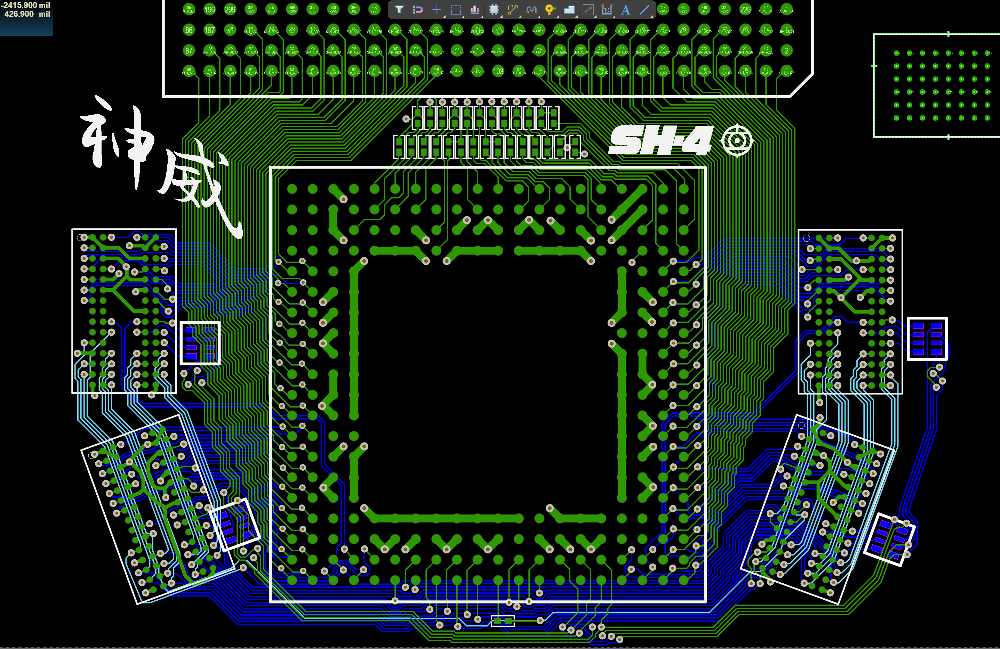Muramasa is a WIP Sega Dreamcast motherboard redesign. The Dreamcast is infamous for having a large and complex motherboard, so a redesign of the system would help to shrink and streamline it for making portable handhelds. Referencing testing others in the community did a few years ago, I have replaced the original TSOP SDRAM and BIOS ICs with BGA packages and begun routing on the CPU and GPU which themselves are large and intimidating BGAs. Luckily the buses are slow enough that length- and impedance-matching aren’t necessary.
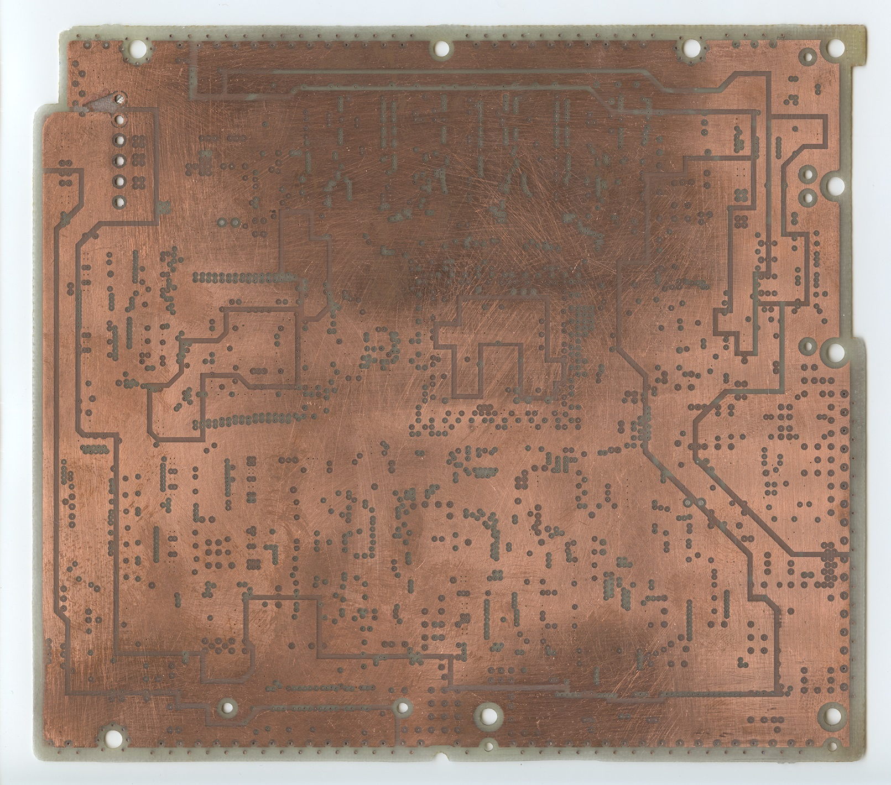This project was also aided by scans I made in 2019 of the Dreamcast motherboard’s internal voltage planes; as far as I know, this was the first time the Dreamcast’s inner layers were imaged.
Vegas (Nintendo Wii)
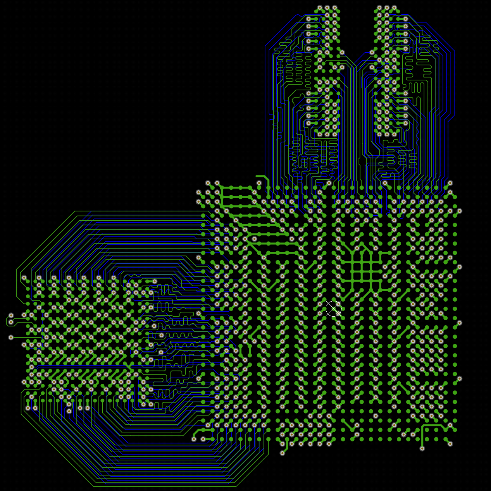This project was inspired by something another portablizer started a few years ago, but didn’t finish. It’s in its early stages but will implement a full Nintendo Wii with all the accoutrement of a typical Wii portable integrated onto a single PCB. This design is more complex than the Dreamcast redesign since it uses GDDR3 and the onboard buses are very fast. Impedance calculations and careful consideration to board stackup have been taken into account to replicate the original motherboard’s characteristics.
Flexible PCBs
Sometimes relocating ICs on trimmed motherboards is easier with a flexible polyimide PCB. I have designed a number of these for various purposes.
AVEflex
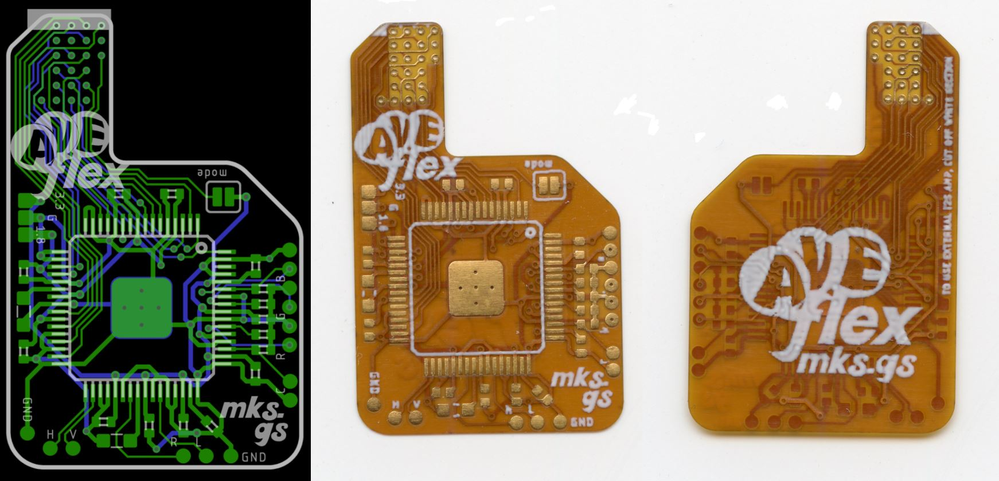AVEflex is a flexible PCB for relocating the Audio-Video Encoder (AVE) on the Nintendo Wii. By placing the AVE under the CPU on the underside of the mainboard, the board can be trimmed smaller while retaining analog video and audio out.
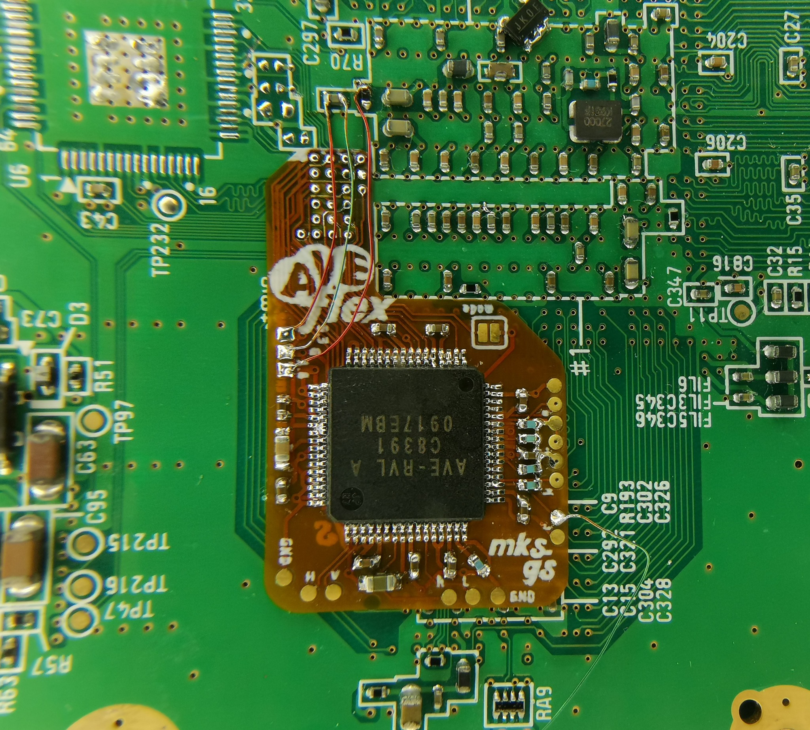Dreamcast FPCs
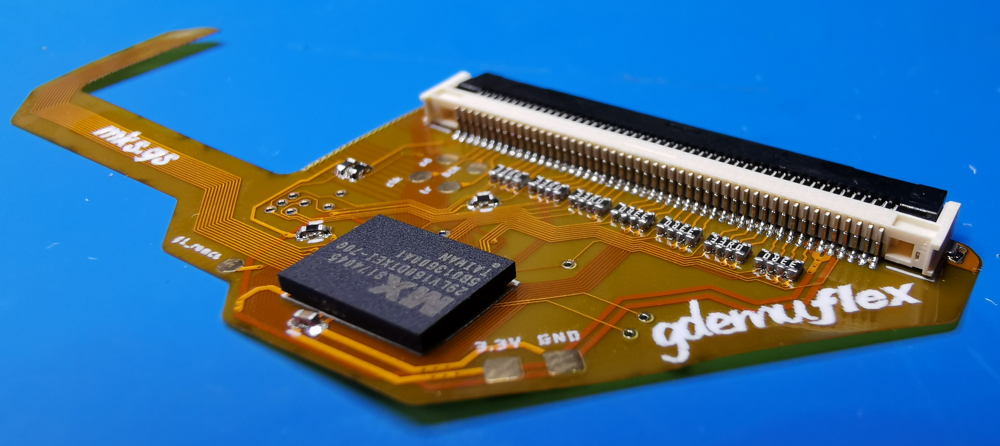To enable further trimming of the Sega Dreamcast motherboard, I designed a trio of FPCs to relocate the AICA (sound processor IC) and its SDRAM (replaced with modern BGA package), the BIOS and disc drive connector, and the video encoder IC, named AICAflex, GDEMUflex, and DVEflex respectively. These FPCs ended up being prohibitivly expensive to get manufactured due to the tight trace-space tolerances required, so due to lack of funds this project is on hold for the time being.

Miscellaneous
These are some other things I’ve made over the years.
Raspberry Pi Handhelds
I’ve created a number of Raspberry Pi handhelds, like this one with a RasPi 3 and a 3.5” screen driven with the Pi’s parallel interface.
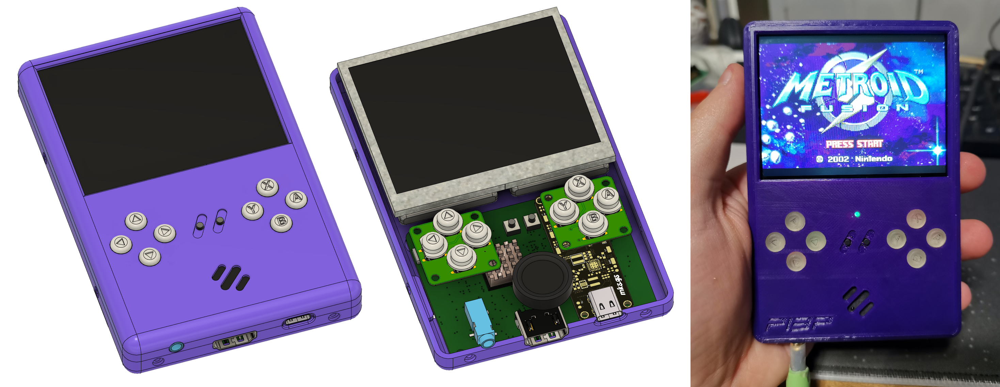Capstone Project
My engineering capstone project was a datalogger with ruggedization requirements. My design had a redundant fallback datalogging system with a captive SD slot to ensure we would still have data in the case of the main system’s failure.
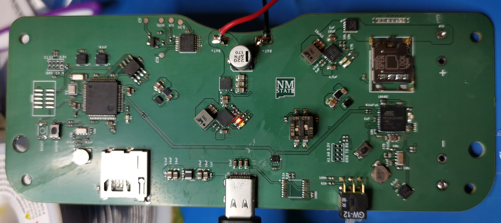Art PCBs
I enjoy dabbling in PCB artwork. The small color pallete and limitations of the Gerber format make it a fun medium.

TTL Clock
A simple TTL clock I built to show visitors to the Aggie Innovation Space at NMSU.
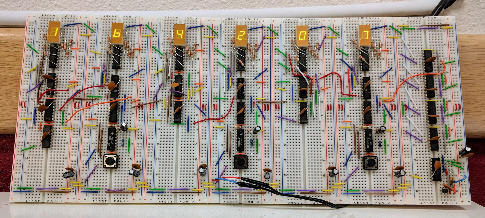